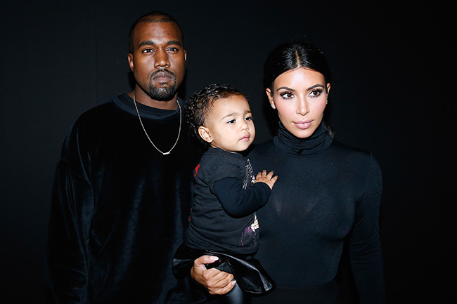

Kanye West is, by no means, a man of humility and vulnerability. Through his interviews, his run-ins with the paparazzi, and, his very own favorite medium of social interaction, his tweets, we clearly see a man whose ego is absolutely too big to fail. But as we can see from this dissection, his new album The Life Of Pablo will exonerate him of all previous pretentiousness and absolve him of his shortcomings.
"Which lifestyle is better?"
A question that Kanye tackles very thoroughly in his new Album. With lyrics in songs like "Famous" and "FML," one can vividly dissect Kanye's thoughts as he publicizes them on paper. This first quote comes from his hit song, featuring the Weeknd: FML.
"I've been waiting for a minute/For my lady/So I can't jeopardize that for one of these hoes."
Kanye's outcries for the difference between his "lady" and his "ladies" is beyond evident. It's a showcase of how Kanye is going to approach being Kanye for the following, nebulous years of his life. Like re-entering High School, Kanye is gonna have to deal with his own problems, while juggling baby issues on the side. But one things for certain, I can't wait to see his next album drop, maybe it'll highlight the shortcomings of fatherhood, or how father hood has created the best parts of his life. Maybe it'll even feature Nori West.
Regardless, you can bet there'll always be hype for Kanye. Now. Then. Forever.